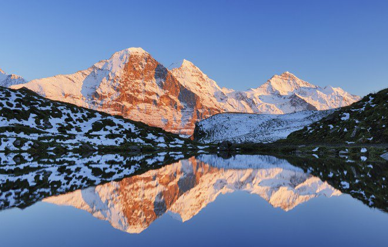

Located on Florida's Emerald Coast, Destin is known for its white beaches and sapphire blue waters. Originating as a small fishing village, it is now a popular tourist destination.
Yosemite
Not just a great valley, but a shrine to human foresight, the strength of granite, the power of glaciers, the persistence of life, and the tranquility of the High Sierra.
Swiss Alps

The Swiss Alps comprise almost all the highest mountains of the Alps, such as Dufourspitze (4,634 m), the Dom (4,545 m), the Liskamm (4,527 m), the Weisshorn (4,506 m) and the Matterhorn (4,478 m).